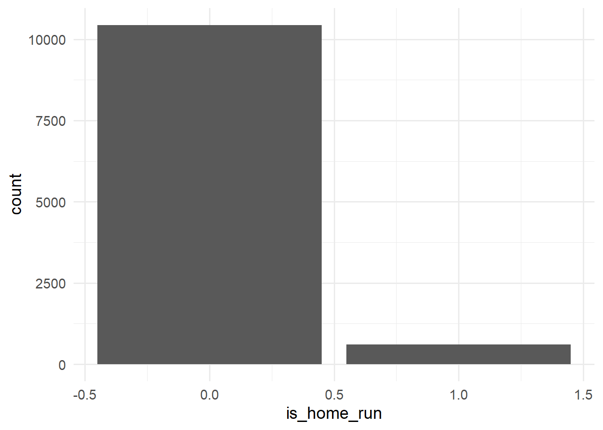
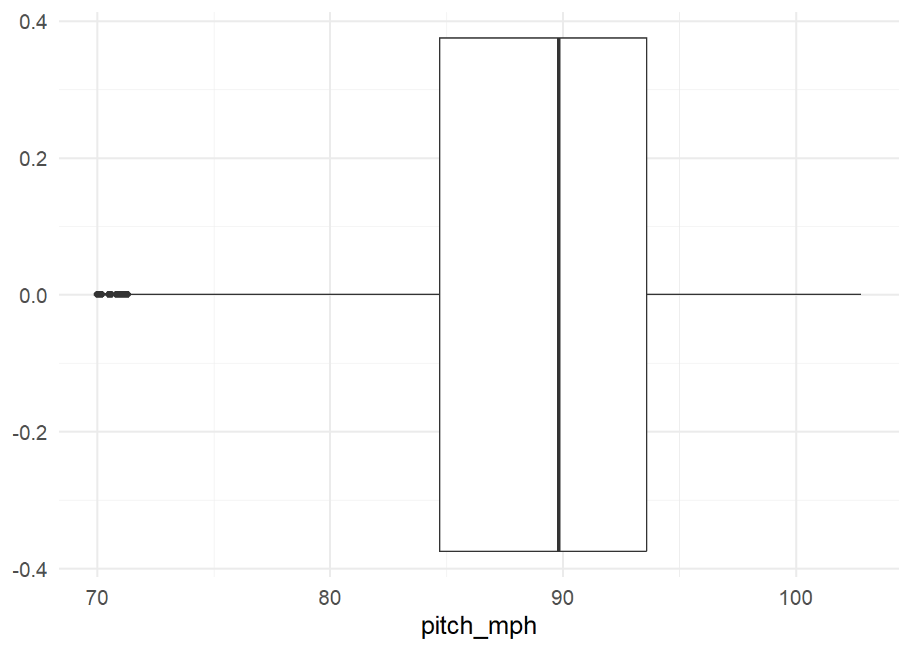
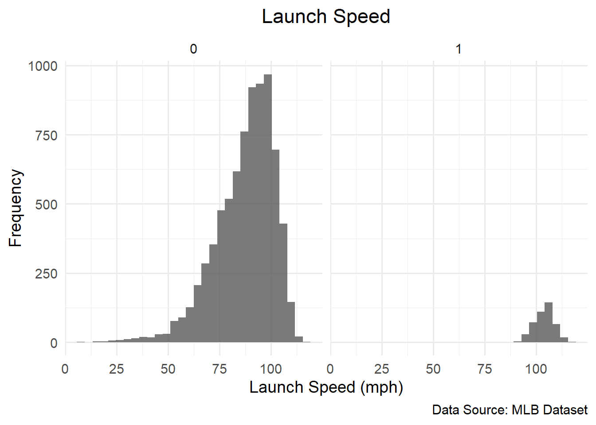
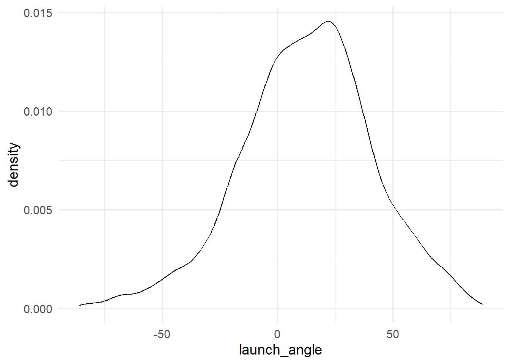

library(tidyverse)
library(tidymodels)
library(skimr)
hits <- read_csv("https://raw.githubusercontent.com/agmath/agmath.github.io/refs/heads/master/data/classification/battedballs.csv")
parks <- read.csv("https://raw.githubusercontent.com/agmath/agmath.github.io/refs/heads/master/data/classification/park_dimensions.csv")1st Doc
Working with Data
Here’s how we add packages to our working library. Before being able to work with them, make sure the packages are installed onto R using install.packages() with the name of the packages inside the parentheses using quotations marks (e.g. install.packages("tidyverse")). Then we can use library() to call those packages for use. To import a data set, we create a title, something simple for easy naming, and use an arrow (<-) to assign a value to it. In this case, we used read_csv() to import one of Dr. G’s data sets. When importing, remember to use a text-only version so that the data imports correctly. To do this in GitHub, click the button that says “raw” when you’re looking at the data, and use that url within read_csv.
Exploring Data
The head() function allows us to take a quick look at the first few rows of a data set. There are two ways we can execute this function and others like it. The first is to put the name of our data set inside the parentheses of our function as shown in the first line of the following code block. Another way is to use a pipe. By using a pipe (either %>% or |>) before a function, you tell the function to use your input as the first operator. Since the first operator often calls for the data that the function will use, we can put our hits data followed by the pipe and then our function. As we’ll see later, this can be useful when applying different functions to a data set at once.
head(hits)# A tibble: 6 × 25
bip_id game_date home_team away_team batter_team batter_name pitcher_name
<dbl> <date> <chr> <chr> <chr> <chr> <chr>
1 61093 2020-09-11 TB BOS BOS bogaerts, xand… snell, blake
2 117924 2020-08-31 CIN STL STL edman, tommy lorenzen, m…
3 84178 2020-09-12 WSH ATL WSH soto, juan anderson, i…
4 25265 2020-09-04 CLE MIL CLE lindor, franci… burnes, cor…
5 117768 2020-08-25 STL KC STL wong, kolten newberry, j…
6 54097 2020-08-23 STL CIN CIN ervin, phil reyes, alex
# ℹ 18 more variables: batter_id <dbl>, pitcher_id <dbl>,
# is_batter_lefty <dbl>, is_pitcher_lefty <dbl>, bb_type <chr>,
# bearing <chr>, pitch_name <chr>, park <dbl>, inning <dbl>,
# outs_when_up <dbl>, balls <dbl>, strikes <dbl>, plate_x <dbl>,
# plate_z <dbl>, pitch_mph <dbl>, launch_speed <dbl>, launch_angle <dbl>,
# is_home_run <dbl>#better way to write, according to Dr. G
hits |>
head()# A tibble: 6 × 25
bip_id game_date home_team away_team batter_team batter_name pitcher_name
<dbl> <date> <chr> <chr> <chr> <chr> <chr>
1 61093 2020-09-11 TB BOS BOS bogaerts, xand… snell, blake
2 117924 2020-08-31 CIN STL STL edman, tommy lorenzen, m…
3 84178 2020-09-12 WSH ATL WSH soto, juan anderson, i…
4 25265 2020-09-04 CLE MIL CLE lindor, franci… burnes, cor…
5 117768 2020-08-25 STL KC STL wong, kolten newberry, j…
6 54097 2020-08-23 STL CIN CIN ervin, phil reyes, alex
# ℹ 18 more variables: batter_id <dbl>, pitcher_id <dbl>,
# is_batter_lefty <dbl>, is_pitcher_lefty <dbl>, bb_type <chr>,
# bearing <chr>, pitch_name <chr>, park <dbl>, inning <dbl>,
# outs_when_up <dbl>, balls <dbl>, strikes <dbl>, plate_x <dbl>,
# plate_z <dbl>, pitch_mph <dbl>, launch_speed <dbl>, launch_angle <dbl>,
# is_home_run <dbl>We can also use the same functions to see our data in parks.
parks |>
head() park NAME Cover LF_Dim CF_Dim RF_Dim LF_W CF_W RF_W
1 0 Chase Field Roof 328 407 335 8 25 8
2 1 SunTrust Park Outdoor 335 400 325 6 8 16
3 2 Oriole Park at Camden Yards Outdoor 333 400 318 7 7 21
4 3 Fenway Park Outdoor 310 390 302 37 9 3
5 4 Wrigley Field Outdoor 355 400 353 16 11 16
6 5 Great American Ballpark Outdoor 328 404 325 12 8 8Joining Datasets
Using the function left_join, we can combine our two different sets into one.
temp <- hits |>
left_join(parks, by = c("park" = "park"))Code in Text
We joined the hits and parks data together to obtain a full data set with 13000 rows and 25 columns.
hits |>
glimpse()Rows: 13,000
Columns: 25
$ bip_id <dbl> 61093, 117924, 84178, 25265, 117768, 54097, 58175, 11…
$ game_date <date> 2020-09-11, 2020-08-31, 2020-09-12, 2020-09-04, 2020…
$ home_team <chr> "TB", "CIN", "WSH", "CLE", "STL", "STL", "CWS", "CWS"…
$ away_team <chr> "BOS", "STL", "ATL", "MIL", "KC", "CIN", "CHC", "MIN"…
$ batter_team <chr> "BOS", "STL", "WSH", "CLE", "STL", "CIN", "CWS", "MIN…
$ batter_name <chr> "bogaerts, xander", "edman, tommy", "soto, juan", "li…
$ pitcher_name <chr> "snell, blake", "lorenzen, michael", "anderson, ian",…
$ batter_id <dbl> 593428, 669242, 665742, 596019, 543939, 640447, 51873…
$ pitcher_id <dbl> 605483, 547179, 666120, 669203, 623470, 621052, 50643…
$ is_batter_lefty <dbl> 0, 1, 1, 1, 1, 0, 1, 0, 0, 1, 0, 0, 0, 1, 0, 0, 0, 0,…
$ is_pitcher_lefty <dbl> 1, 0, 0, 0, 0, 0, 0, 1, 1, 1, 1, 0, 0, 1, 0, 0, 1, 0,…
$ bb_type <chr> "ground_ball", "ground_ball", "ground_ball", "ground_…
$ bearing <chr> "center", "center", "center", "left", "center", "left…
$ pitch_name <chr> "Changeup", "Changeup", "Changeup", "Changeup", "Slid…
$ park <dbl> 26, 5, 29, 6, 25, 25, 8, 8, 26, 26, 23, 19, 17, 8, 22…
$ inning <dbl> 3, 8, 3, 4, 4, 9, 6, 2, 5, 4, 5, 5, 5, 3, 1, 4, 8, 6,…
$ outs_when_up <dbl> 2, 1, 2, 1, 2, 0, 1, 1, 2, 2, 1, 0, 2, 1, 1, 2, 2, 2,…
$ balls <dbl> 2, 0, 1, 2, 0, 0, 0, 2, 0, 2, 2, 0, 2, 1, 1, 0, 2, 0,…
$ strikes <dbl> 2, 1, 1, 2, 2, 1, 1, 0, 0, 2, 0, 2, 2, 1, 2, 1, 2, 1,…
$ plate_x <dbl> 1.65, -0.97, -0.74, -0.72, -0.12, -0.35, -0.23, 0.15,…
$ plate_z <dbl> 2.83, 1.82, 2.35, 1.65, 2.16, 3.46, 2.69, 3.05, 2.36,…
$ pitch_mph <dbl> 89.5, 86.4, 89.7, 89.7, 82.2, 97.4, 94.6, 90.7, 91.6,…
$ launch_speed <dbl> 58.5, NA, 71.9, 71.5, 97.2, NA, 86.5, 92.7, 83.4, 105…
$ launch_angle <dbl> -47, -8, NA, 10, 23, 54, NA, 17, 14, 18, -11, 15, 60,…
$ is_home_run <dbl> 0, 0, 0, 0, 0, 0, 0, 0, 0, 0, 0, 0, 0, 0, 0, 0, 0, 0,…hits |>
skim()| Name | hits |
| Number of rows | 13000 |
| Number of columns | 25 |
| _______________________ | |
| Column type frequency: | |
| character | 8 |
| Date | 1 |
| numeric | 16 |
| ________________________ | |
| Group variables | None |
Variable type: character
| skim_variable | n_missing | complete_rate | min | max | empty | n_unique | whitespace |
|---|---|---|---|---|---|---|---|
| home_team | 0 | 1 | 2 | 3 | 0 | 30 | 0 |
| away_team | 0 | 1 | 2 | 3 | 0 | 30 | 0 |
| batter_team | 0 | 1 | 2 | 3 | 0 | 30 | 0 |
| batter_name | 0 | 1 | 8 | 22 | 0 | 561 | 0 |
| pitcher_name | 0 | 1 | 9 | 21 | 0 | 709 | 0 |
| bb_type | 1 | 1 | 5 | 11 | 0 | 4 | 0 |
| bearing | 0 | 1 | 4 | 6 | 0 | 3 | 0 |
| pitch_name | 0 | 1 | 6 | 15 | 0 | 9 | 0 |
Variable type: Date
| skim_variable | n_missing | complete_rate | min | max | median | n_unique |
|---|---|---|---|---|---|---|
| game_date | 0 | 1 | 2020-07-23 | 2020-10-27 | 2020-08-29 | 90 |
Variable type: numeric
| skim_variable | n_missing | complete_rate | mean | sd | p0 | p25 | p50 | p75 | p100 | hist |
|---|---|---|---|---|---|---|---|---|---|---|
| bip_id | 0 | 1.00 | 61810.38 | 37071.39 | 11.00 | 27645.25 | 64242.50 | 94613.75 | 119517.00 | ▇▆▆▆▇ |
| batter_id | 0 | 1.00 | 586622.68 | 65484.91 | 405395.00 | 543685.00 | 596146.00 | 642086.00 | 680777.00 | ▂▂▃▇▆ |
| pitcher_id | 0 | 1.00 | 591536.36 | 65748.18 | 424144.00 | 543901.00 | 605513.00 | 643256.00 | 685493.00 | ▂▂▃▇▇ |
| is_batter_lefty | 0 | 1.00 | 0.42 | 0.49 | 0.00 | 0.00 | 0.00 | 1.00 | 1.00 | ▇▁▁▁▆ |
| is_pitcher_lefty | 0 | 1.00 | 0.27 | 0.45 | 0.00 | 0.00 | 0.00 | 1.00 | 1.00 | ▇▁▁▁▃ |
| park | 0 | 1.00 | 14.45 | 8.69 | 0.00 | 7.00 | 14.00 | 22.00 | 29.00 | ▇▇▇▇▇ |
| inning | 0 | 1.00 | 4.81 | 2.52 | 1.00 | 3.00 | 5.00 | 7.00 | 13.00 | ▇▆▇▂▁ |
| outs_when_up | 0 | 1.00 | 0.95 | 0.82 | 0.00 | 0.00 | 1.00 | 2.00 | 2.00 | ▇▁▇▁▇ |
| balls | 0 | 1.00 | 1.12 | 1.02 | 0.00 | 0.00 | 1.00 | 2.00 | 3.00 | ▇▇▁▅▃ |
| strikes | 0 | 1.00 | 1.11 | 0.81 | 0.00 | 0.00 | 1.00 | 2.00 | 2.00 | ▆▁▇▁▇ |
| plate_x | 0 | 1.00 | -0.01 | 0.55 | -2.06 | -0.40 | 0.00 | 0.38 | 1.95 | ▁▃▇▅▁ |
| plate_z | 0 | 1.00 | 2.32 | 0.57 | 0.42 | 1.93 | 2.32 | 2.72 | 4.74 | ▁▆▇▂▁ |
| pitch_mph | 0 | 1.00 | 88.88 | 5.90 | 70.00 | 84.70 | 89.80 | 93.60 | 102.80 | ▁▃▆▇▂ |
| launch_speed | 3364 | 0.74 | 88.03 | 14.57 | 7.50 | 79.80 | 90.70 | 98.90 | 117.30 | ▁▁▂▇▆ |
| launch_angle | 3312 | 0.75 | 12.49 | 28.85 | -87.00 | -6.00 | 14.00 | 31.00 | 89.00 | ▁▂▇▆▂ |
| is_home_run | 0 | 1.00 | 0.05 | 0.23 | 0.00 | 0.00 | 0.00 | 0.00 | 1.00 | ▇▁▁▁▁ |
Splitting Data (Making Test Sets)
Here, we split the data into two groups, testing and training, for our future model. The first variable in initial_splits specifies the data set we’re working with, the second is the proportion of training data to testing data, and the third allows us to make sure a particular variable within the data set matches prevalence in both separate sets in the same proportion. In this case, since we’re trying to anticipate future home runs, we use is_home_run as the strata.
set.seed(434)
data_splits <- initial_split(temp, 0.85, strata = is_home_run)
train <- training(data_splits)
test <- testing(data_splits)Exploratory Data Analysis
How and why do home runs happen?
Sometimes Useful Functions
Filtering Rows
We can use filter to
train |>
filter(is_home_run == 1)# A tibble: 613 × 33
bip_id game_date home_team away_team batter_team batter_name pitcher_name
<dbl> <date> <chr> <chr> <chr> <chr> <chr>
1 63561 2020-09-17 TB BAL BAL alberto, hans… richards, t…
2 115167 2020-09-11 NYY BAL NYY voit, luke wojciechows…
3 51861 2020-09-13 TOR NYM TOR gurriel, lour… peterson, d…
4 53127 2020-08-31 NYM MIA NYM cano, robinson vesia, alex
5 61906 2020-08-15 CHC MIL CHC souza, steven knebel, cor…
6 111834 2020-08-23 PIT MIL MIL smoak, justin hartlieb, g…
7 41559 2020-10-15 ATL LAD LAD rios, edwin wilson, bry…
8 26757 2020-10-07 ATL MIA ATL swanson, dans… lopez, pablo
9 57940 2020-10-02 CHC MIA MIA cooper, garre… darvish, yu
10 48391 2020-08-23 SF ARI SF dickerson, al… rondon, hec…
# ℹ 603 more rows
# ℹ 26 more variables: batter_id <dbl>, pitcher_id <dbl>,
# is_batter_lefty <dbl>, is_pitcher_lefty <dbl>, bb_type <chr>,
# bearing <chr>, pitch_name <chr>, park <dbl>, inning <dbl>,
# outs_when_up <dbl>, balls <dbl>, strikes <dbl>, plate_x <dbl>,
# plate_z <dbl>, pitch_mph <dbl>, launch_speed <dbl>, launch_angle <dbl>,
# is_home_run <dbl>, NAME <chr>, Cover <chr>, LF_Dim <int>, CF_Dim <int>, …train |>
filter(launch_angle > 45)# A tibble: 970 × 33
bip_id game_date home_team away_team batter_team batter_name pitcher_name
<dbl> <date> <chr> <chr> <chr> <chr> <chr>
1 54097 2020-08-23 STL CIN CIN ervin, phil reyes, alex
2 117224 2020-09-20 NYM ATL ATL swanson, dans… porcello, r…
3 96888 2020-09-25 TEX HOU HOU maldonado, ma… cody, kyle
4 43175 2020-09-19 BAL TB BAL mountcastle, … morton, cha…
5 51557 2020-08-26 NYM MIA MIA diaz, lewin degrom, jac…
6 88166 2020-08-14 PHI NYM NYM ramos, wilson howard, spe…
7 55356 2020-08-19 OAK ARI OAK olson, matt kelly, merr…
8 91031 2020-09-18 CHC MIN CHC heyward, jason hill, rich
9 45871 2020-09-07 SD COL SD machado, manny freeland, k…
10 86005 2020-08-08 TB NYY NYY judge, aaron glasnow, ty…
# ℹ 960 more rows
# ℹ 26 more variables: batter_id <dbl>, pitcher_id <dbl>,
# is_batter_lefty <dbl>, is_pitcher_lefty <dbl>, bb_type <chr>,
# bearing <chr>, pitch_name <chr>, park <dbl>, inning <dbl>,
# outs_when_up <dbl>, balls <dbl>, strikes <dbl>, plate_x <dbl>,
# plate_z <dbl>, pitch_mph <dbl>, launch_speed <dbl>, launch_angle <dbl>,
# is_home_run <dbl>, NAME <chr>, Cover <chr>, LF_Dim <int>, CF_Dim <int>, …train |>
filter(str_detect(NAME, "Fenway"))# A tibble: 386 × 33
bip_id game_date home_team away_team batter_team batter_name pitcher_name
<dbl> <date> <chr> <chr> <chr> <chr> <chr>
1 72059 2020-07-25 BOS BAL BOS peraza, jose cobb, alex
2 89693 2020-07-25 BOS BAL BAL hays, austin perez, mart…
3 116705 2020-09-01 BOS ATL ATL freeman, fred… hart, kyle
4 81855 2020-07-26 BOS BAL BAL davis, chris weber, ryan
5 106913 2020-09-22 BOS BAL BOS chavis, micha… akin, keegan
6 111113 2020-08-29 BOS WSH WSH eaton, adam brice, aust…
7 101052 2020-09-20 BOS NYY BOS lin, tzu-wei cessa, luis
8 99863 2020-09-18 BOS NYY BOS bogaerts, xan… montgomery,…
9 110912 2020-08-30 BOS WSH WSH garcia, luis osich, josh
10 61092 2020-08-12 BOS TB BOS vazquez, chri… snell, blake
# ℹ 376 more rows
# ℹ 26 more variables: batter_id <dbl>, pitcher_id <dbl>,
# is_batter_lefty <dbl>, is_pitcher_lefty <dbl>, bb_type <chr>,
# bearing <chr>, pitch_name <chr>, park <dbl>, inning <dbl>,
# outs_when_up <dbl>, balls <dbl>, strikes <dbl>, plate_x <dbl>,
# plate_z <dbl>, pitch_mph <dbl>, launch_speed <dbl>, launch_angle <dbl>,
# is_home_run <dbl>, NAME <chr>, Cover <chr>, LF_Dim <int>, CF_Dim <int>, …Selecting just a few columns
This doesn’t change our data set, but instead allows us to look at a few specific variables.
train |>
select(launch_speed, launch_angle, is_home_run)# A tibble: 11,050 × 3
launch_speed launch_angle is_home_run
<dbl> <dbl> <dbl>
1 NA -8 0
2 71.9 NA 0
3 97.2 23 0
4 NA 54 0
5 86.5 NA 0
6 92.7 17 0
7 83.4 14 0
8 106. 18 0
9 86.9 -11 0
10 104. 15 0
# ℹ 11,040 more rowsBuilding new variables from old one (Feature Engineering)
Mutate creates a new object based on our current ones. In this case, we used it to check if the speed of a pitch (pitch_mph) was above 100, and returned a new variable that answered either “yes” or “no” tacked onto the end of the data set. We can create a new set to either replace our original or make a separate set.
train |>
mutate(fast_pitch = ifelse(pitch_mph > 100, "yes", "no"))# A tibble: 11,050 × 34
bip_id game_date home_team away_team batter_team batter_name pitcher_name
<dbl> <date> <chr> <chr> <chr> <chr> <chr>
1 117924 2020-08-31 CIN STL STL edman, tommy lorenzen, m…
2 84178 2020-09-12 WSH ATL WSH soto, juan anderson, i…
3 117768 2020-08-25 STL KC STL wong, kolten newberry, j…
4 54097 2020-08-23 STL CIN CIN ervin, phil reyes, alex
5 58175 2020-09-25 CWS CHC CWS grandal, yasm… darvish, yu
6 118766 2020-07-26 CWS MIN MIN cruz, nelson gonzalez, g…
7 11349 2020-10-11 TB HOU TB zunino, mike valdez, fra…
8 61080 2020-09-11 TB BOS BOS bradley, jack… snell, blake
9 2652 2020-08-23 SEA TEX SEA bishop, braden minor, mike
10 46583 2020-07-28 OAK COL OAK laureano, ram… senzatela, …
# ℹ 11,040 more rows
# ℹ 27 more variables: batter_id <dbl>, pitcher_id <dbl>,
# is_batter_lefty <dbl>, is_pitcher_lefty <dbl>, bb_type <chr>,
# bearing <chr>, pitch_name <chr>, park <dbl>, inning <dbl>,
# outs_when_up <dbl>, balls <dbl>, strikes <dbl>, plate_x <dbl>,
# plate_z <dbl>, pitch_mph <dbl>, launch_speed <dbl>, launch_angle <dbl>,
# is_home_run <dbl>, NAME <chr>, Cover <chr>, LF_Dim <int>, CF_Dim <int>, …train_mutated <- train |>
mutate(fast_pitch = ifelse(pitch_mph > 100, "yes", "no"))Summary Statistics
Home runs…
train |>
count(is_home_run) |>
mutate(prop = 100*n/sum(n))# A tibble: 2 × 3
is_home_run n prop
<dbl> <int> <dbl>
1 0 10437 94.5
2 1 613 5.55Using pct_hr is another way to find the proportion of home runs. Again, multiply it by 100 to get the percentage.
train |>
summarize(pct_hr = 100*mean(is_home_run))# A tibble: 1 × 1
pct_hr
<dbl>
1 5.55Summarizing Launch Angle
By using our training data, we can
train |>
summarize(
min_angle = min(launch_angle, na.rm = TRUE),
mean_angle = mean(launch_angle, na.rm = TRUE),
median_angle = median(launch_angle, na.rm = TRUE),
max_angle = max(launch_angle, na.rm = TRUE),
sd_angle = sd(launch_angle, na.rm = TRUE)
)# A tibble: 1 × 5
min_angle mean_angle median_angle max_angle sd_angle
<dbl> <dbl> <dbl> <dbl> <dbl>
1 -86 12.7 14 89 28.6Here’s another way of doing it using the filter function to clean the blank variables out of our data.
train |>
filter(!is.na(launch_angle)) |>
summarize(
min_angle = min(launch_angle),
mean_angle = mean(launch_angle),
median_angle = median(launch_angle),
max_angle = max(launch_angle),
sd_angle = sd(launch_angle)
)# A tibble: 1 × 5
min_angle mean_angle median_angle max_angle sd_angle
<dbl> <dbl> <dbl> <dbl> <dbl>
1 -86 12.7 14 89 28.6Grouped Summaries
This creates two rows of summary separated by if the instance is a home run or not. You can use this function for other variables, like categories, for multiple rows.
train |>
group_by(is_home_run) |>
filter(!is.na(launch_angle)) |>
summarize(
min_angle = min(launch_angle),
mean_angle = mean(launch_angle),
median_angle = median(launch_angle),
max_angle = max(launch_angle),
sd_angle = sd(launch_angle)
)# A tibble: 2 × 6
is_home_run min_angle mean_angle median_angle max_angle sd_angle
<dbl> <dbl> <dbl> <dbl> <dbl> <dbl>
1 0 -86 11.7 12 89 29.1
2 1 11 29.0 28 47 5.37train |>
group_by(NAME, is_home_run) |>
filter(!is.na(launch_angle)) |>
summarize(
min_angle = min(launch_angle),
mean_angle = mean(launch_angle),
median_angle = median(launch_angle),
max_angle = max(launch_angle),
sd_angle = sd(launch_angle)
)`summarise()` has grouped output by 'NAME'. You can override using the
`.groups` argument.# A tibble: 60 × 7
# Groups: NAME [30]
NAME is_home_run min_angle mean_angle median_angle max_angle sd_angle
<chr> <dbl> <dbl> <dbl> <dbl> <dbl> <dbl>
1 Angel Stadi… 0 -66 13 11 86 29.0
2 Angel Stadi… 1 22 29.0 29 37 4.85
3 Busch Stadi… 0 -77 12.0 14 81 29.5
4 Busch Stadi… 1 23 31.9 30.5 41 5.91
5 Chase Field 0 -86 12.9 13.5 74 26.7
6 Chase Field 1 22 29.3 29 38 4.24
7 Citi Field 0 -79 11.7 11 79 28.9
8 Citi Field 1 20 28.8 27 42 6.46
9 Citizens Ba… 0 -70 11.9 13.5 83 29.3
10 Citizens Ba… 1 11 29.3 28 44 7.32
# ℹ 50 more rowsData Vizualization
theme_set(theme_minimal(base_size = 14))
train |>
ggplot() +
geom_bar(aes(x = is_home_run))
train |>
ggplot() +
geom_boxplot(aes(x = pitch_mph))
train |>
ggplot() +
geom_histogram(aes(x = launch_speed), alpha = 0.8) +
labs(
title = "Launch Speed",
x = "Launch Speed (mph)",
y = "Frequency",
caption = "Data Source: MLB Dataset"
) +
theme(
plot.title = element_text(hjust = 0.5)
) +
facet_wrap(vars(is_home_run))`stat_bin()` using `bins = 30`. Pick better value with `binwidth`.Warning: Removed 2836 rows containing non-finite outside the scale range
(`stat_bin()`).
train |>
ggplot() +
geom_density(aes(x = launch_angle), alpha = 0.7)Warning: Removed 2836 rows containing non-finite outside the scale range
(`stat_density()`).